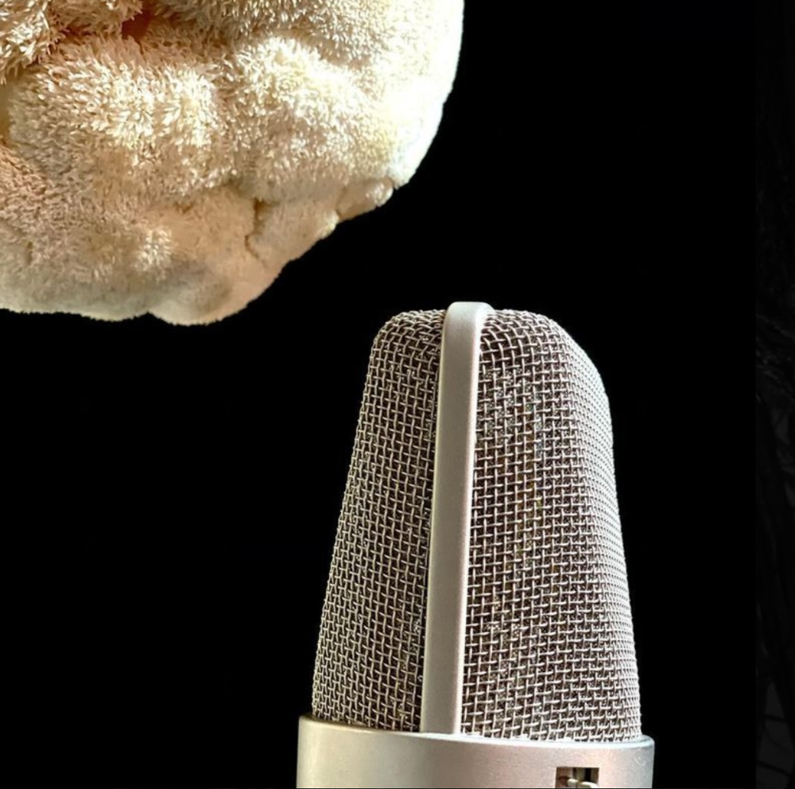
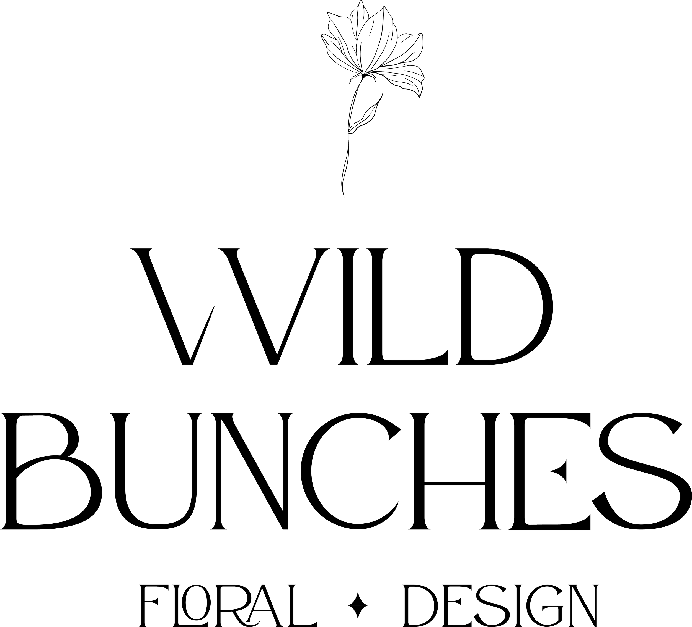
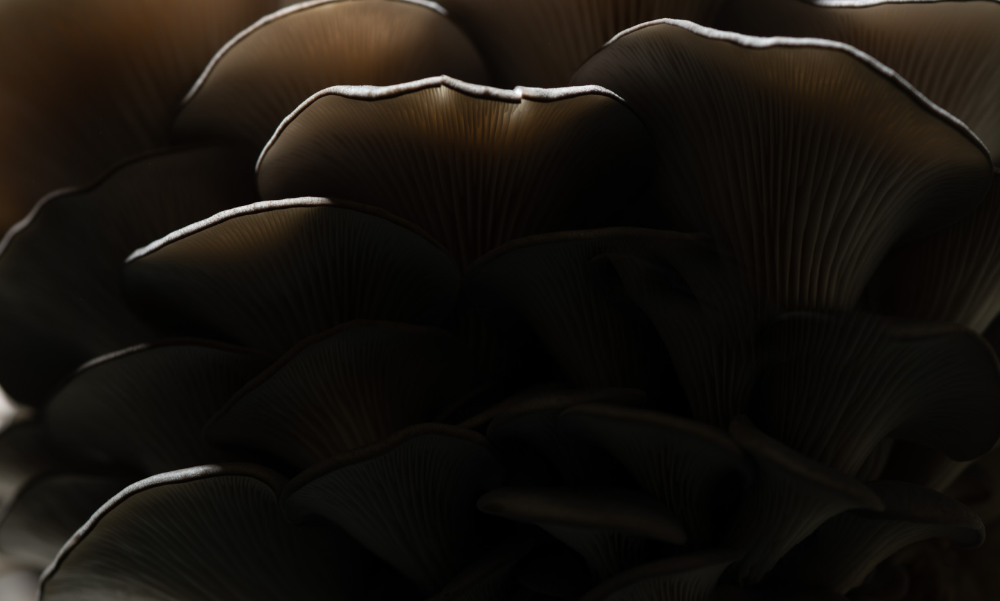

Ethical Harvest Protocols
Cut, don't pull. Leave the mycelium undisturbed. Take less than 10% of a patch. Use mesh bags to spread spores as you walk. Never harvest rare or red-listed species.
Wild Fungi & Forest Stewardship
QuantumAggForage is a community of wild harvesters, mycologists, and forest stewards documenting fungal diversity and protecting the underground ecosystems that sustain our forests across New Jersey, Pennsylvania, New York, and Florida.
Discover Fungi
From the delicate gills of Marasmius to the robust pores of Boletus, every species tells a story about the forest's health. Our regional guides help you identify, understand, and ethically engage with the fungi beneath your feet.

Each season reveals different fungal citizens. Spring brings morels and oysters. Summer hosts chanterelles and chicken of the woods. Autumn is the kingdom of boletes, amanitas, and honey mushrooms. Even winter offers velvet foot and late oysters on thaw days.
Safe foraging begins with careful observation. We teach a systematic approach: substrate and habitat, macroscopic features (cap, gills, pores, stem, veil), spore print color, bruising reactions, odor, and microscopic confirmation when needed. Never consume a mushroom you cannot identify with 100% certainty.
Our regional chapter leads offer hands-on identification walks throughout the foraging season.
Forest Stewardship
Ethical foraging is not taking — it is participating in an ancient relationship. We harvest with gratitude, take only what is abundant, leave the substrate intact, and give back through habitat restoration and citizen science.
Cut, don't pull. Leave the mycelium undisturbed. Take less than 10% of a patch. Use mesh bags to spread spores as you walk. Never harvest rare or red-listed species.
Every foray contributes to our regional species atlases. Members record observations via iNaturalist and our internal database, tracking phenology, distribution shifts, and habitat associations over time.
We partner with land trusts and state parks to remove invasive species, inoculate logs with native saprotrophs, and monitor mycorrhizal recovery in disturbed sites. Members volunteer for seasonal workdays.
Our chapter leads negotiate stewardship agreements with private landowners and public agencies, securing ethical foraging access in exchange for ecological monitoring and invasive species management.
How It Works
Whether you've never picked a mushroom or you've been foraging for decades, there's a path for you in our community.
Find your regional chapter — NJ Pine Barrens, PA Appalachians, NY Catskills/Adirondacks, or FL Sandhills. Attend a monthly meeting or introductory walk to meet leads and members.
Join our seasonal identification workshops covering safety, ethics, ecology, and regional species. Complete the Forager Fundamentals certificate to access chapter forays.
Walk with experienced foragers on documented sites. Contribute observations to our species atlas. Practice ethical harvest under guidance. Build your personal species list.
Specialize in a genus. Lead walks. Mentor new members. Contribute to habitat restoration. Advocate for fungal conservation in land-use decisions. Become a chapter lead.
Interactive Map
Drop a pin to mark your foraging area and set your travel range. Chapter leads use this to connect you with nearby forays, stewardship sites, and fellow foragers. Your location data stays private — only aggregated, anonymized data informs chapter planning.
Community & Chapters
The soil of old-growth forests holds the key to planetary health. Its fungi regulate carbon, feed the trees, filter water, and heal damaged land. QuantumAggForage unites wild harvesters to protect these habitats and share knowledge across our regional chapters.

Each chapter operates semi-autonomously, adapted to its bioregion's fungal calendar, land access patterns, and conservation priorities. Chapter leads coordinate forays, manage land agreements, and mentor members.

No experience required — only curiosity, respect for the land, and willingness to learn.
Join the CommunityGet Involved
Whether you want to join a chapter, schedule a private walk, partner your land, or share your expertise — send us a message. We'll connect you with the right chapter lead.